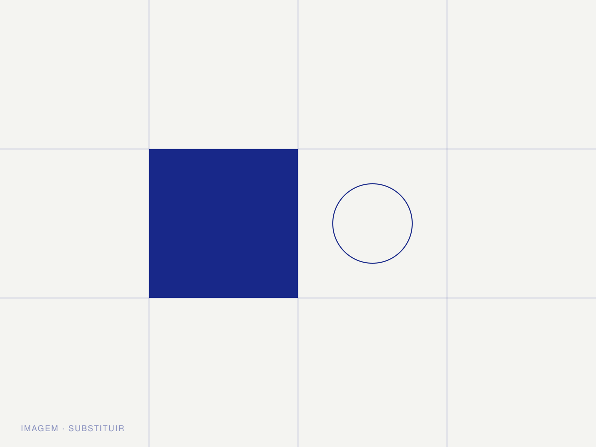
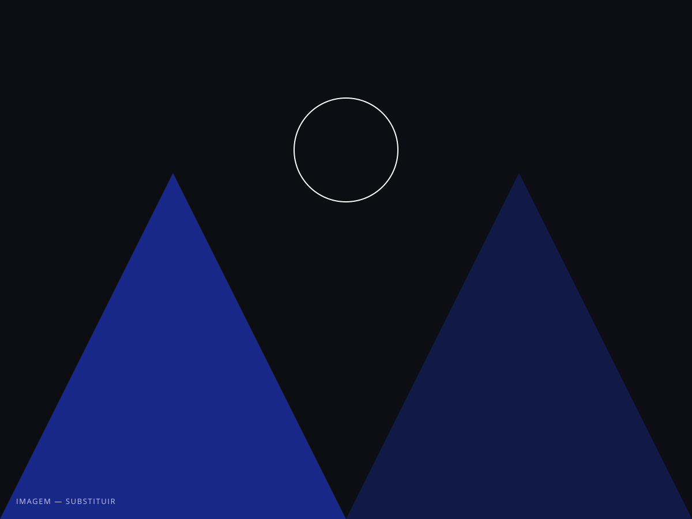
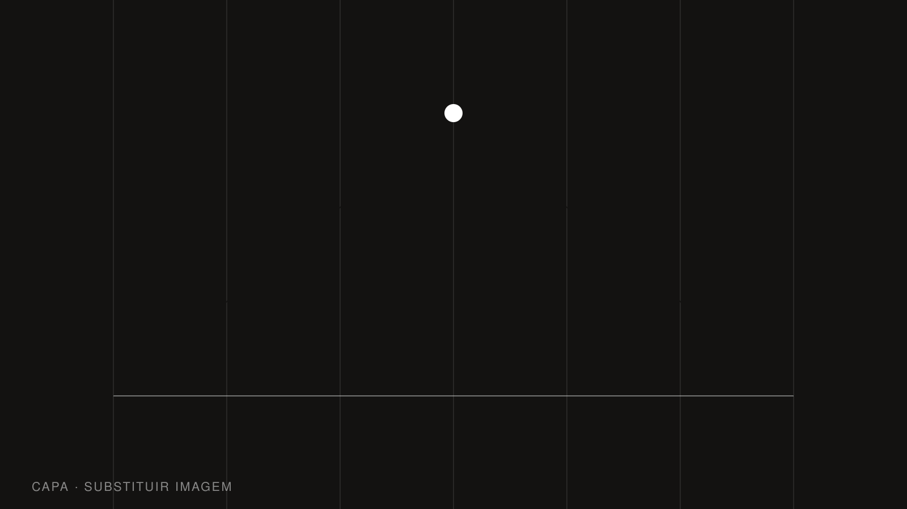

Projetos / 02 / Digital
Verda
Uma plataforma de gestão agrícola que dobrou de tamanho em um ano e precisava de uma interface que aguentasse o próximo dobro.

O produto funcionava bem, mas tinha crescido por acúmulo: cada nova função entrava com seus próprios botões, espaçamentos e cores. Havia onze tons de verde no código. Para o time de engenharia, qualquer mudança pequena virava uma decisão de design.
No site institucional, o problema era outro: a página explicava a ferramenta para quem já a conhecia. Produtores que chegavam por busca não entendiam, em dez segundos, o que a Verda resolvia.


Começamos pelo inventário: mapeamos cada componente em uso e reduzimos a um conjunto de vinte e quatro peças com regras claras de espaçamento, tipografia e estado. O resultado virou uma biblioteca em Figma espelhada em tokens, entregue já no formato que o time de front-end usa.
O site foi reescrito em torno de uma frase e um número: o que a plataforma faz e quanto economiza. A estrutura leva o visitante do problema à demonstração em três blocos, e a mesma linguagem visual do produto sustenta a página, sem descolamento entre o que se promete e o que se encontra depois do login.

O que mudou.
Medido nos três meses seguintes à publicação da nova interface.
Componentes documentados substituindo dezenas de variações soltas no código.
Tons de verde no produto, agora com uso definido por função.
Aumento nos pedidos de demonstração pela página inicial.
Tudo o que foi para as mãos do cliente ao final das sete semanas.
Site institucional
Cinco páginas em design responsivo, com protótipo navegável e handoff completo.
Design system
Biblioteca em Figma com 24 componentes, tokens e documentação de uso.
Telas-chave
Painel, relatórios e onboarding redesenhados como referência de aplicação.
Handoff
Duas sessões com o time de engenharia e acompanhamento durante a implementação.
Contato
Seu projeto pode ser o próximo.
Conte em duas linhas o que você precisa. Respondemos em até um dia útil.
Iniciar projeto